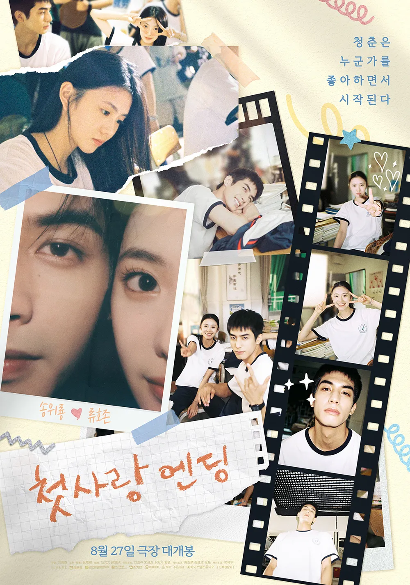

이름
제 이름은 김윤진입니다.자기 소개
저는 컴퓨터학부 플랫폼SW&데이터과학 전공 24학번 김윤진입니다.저의 생일은 5월 6일이고 별자리는 황소자리입니다.
취미

저의 취미는 영화 시청입니다.
아래는 제가 최근에 재밌게 본 영화들입니다.
제목은 순서대로 첫사랑엔딩과 어바웃타임입니다.
특기
제 특기는 시간 맞추기입니다.시계를 안 보고도 대충 시간을 맞출 수 있는 특기를 가지고 있습니다.
장단점
저의 장점은 공감과 경청입니다.저는 제 이야기를 하는 것보다 다른 사람의 이야기를 듣고 경청하는 것을 좋아합니다.
저의 단점은 다리 떨기입니다.
가끔씩 집중을 하면 다리를 떠는 습관이 있습니다.